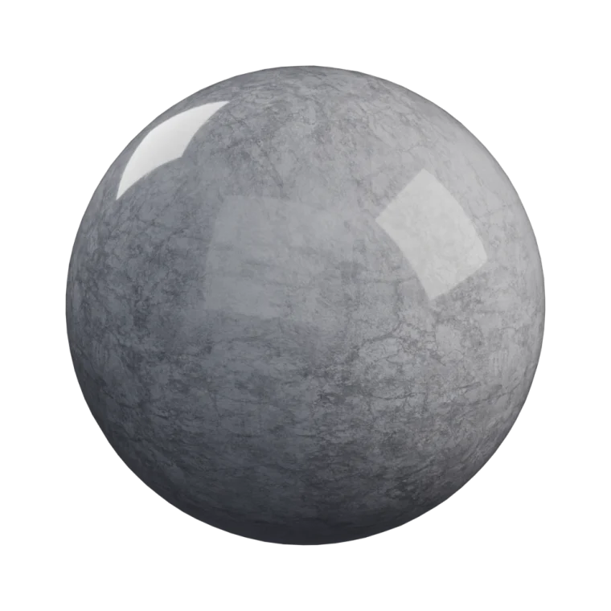
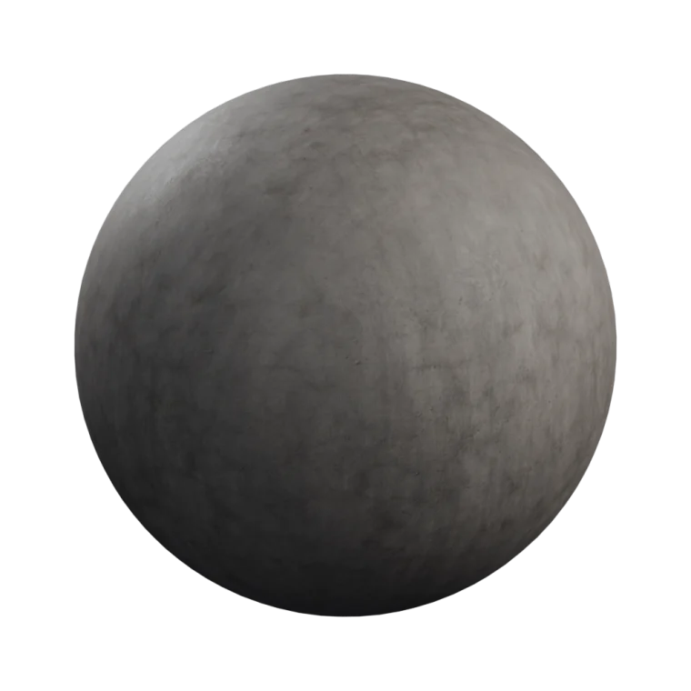
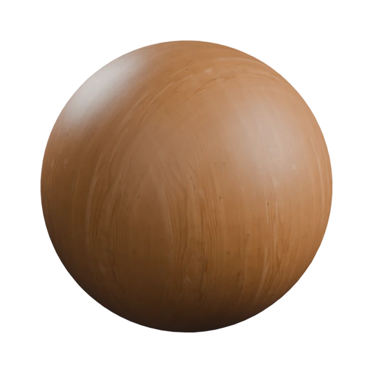
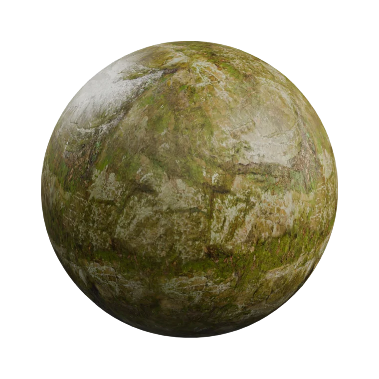

The pipeline
Point it at a folder. Get an asset back.
Read the folder
A MaterialX .mtlx sidecar is read exactly when it's there; otherwise filename keywords, suffix-independent. Built-in XML only — nothing to install.
Apply and wire
Scale applied, textures mapped, a Principled BSDF wired. The default is a seam-free triplanar preview that never touches your UVs.
Finish the UVs
Triplanar makes no UV map — so the panel says so, and offers one click to keep the mesh's own UVs or make new ones. Baking and engine export need real ones.
Name, batch, render
Objects, meshes and materials take one family name. LODs and duplicate cleanup on demand. Then light it, frame it, and render stills or a turntable.
Any folder
The same pipeline, whatever you feed it.




Point Kilnkit at a marble set or a mossy rock set — it's the same one click, the same finished ball, no node editing in between.
Four folders from ambientCG. Same sphere, same one click.
In the box
Small tool. Whole finish.
Accurate detection
Reads .mtlx sidecars for exact channel mapping — no keyword guessing, no GL/DX normal ambiguity.
Six UV modes
Triplanar, Keep Existing, Object, Cube, Smart UV, and SLIM auto-seam unwrap.
Live sliders
Texture scale per axis, AO, normal and height — with optional two-way node sync.
Asset library
Build materials straight from folders with no mesh, mark them as assets, export one packed .blend each.
Batch, non-blocking
Process many objects, or import a parent folder as one slot per sub-folder. The UI never freezes.
Render automation
Environment, three-point lighting, an auto-framed camera, multi-angle stills, and a 360° turntable.
Editions
Same code. Two builds.
The free build simply omits the render-queue file. No runtime lock, no licence check anywhere in the code — the split is the mechanism, so the GPL source stays freely modifiable either way.
| Free | Full | |
|---|---|---|
| Finishing pipeline | Yes | Yes |
.mtlx, sliders, batch | Yes | Yes |
| Render automation | Yes | Yes |
| Turntable video | Yes | Yes |
| Render queue | — | Yes |
Honest scope
What it does not do.
- It does not generate or paint textures. Bring your own maps.
- It is not a material library. Nothing pre-made ships with it.
- It is not a render farm. The queue runs on your machine.
- It is not an asset manager. It feeds Blender's own asset library rather than replacing it.
Requirements
Nothing to install.
Blender 4.5 LTS or newer. Pure Python on Blender's own API — no PIP packages, no bundled wheels, no external programs. Kilnkit makes no network requests of any kind and works fully offline.
Field notes
Notes from the workbench.
The occasional writeup on finishing, tooling, and why Kilnkit is shaped the way it is. More coming as the kiln fires.